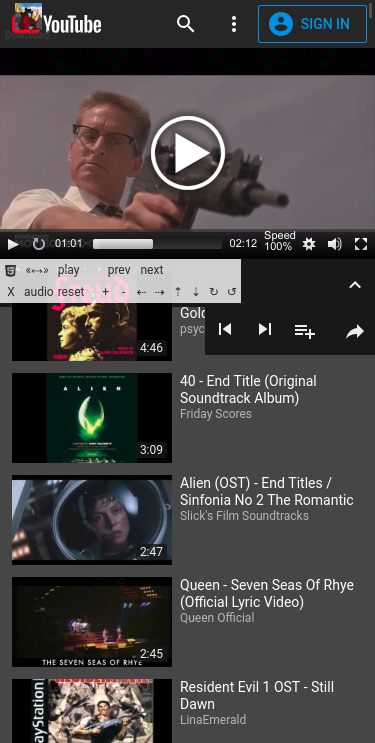
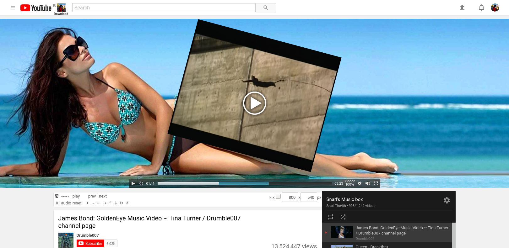
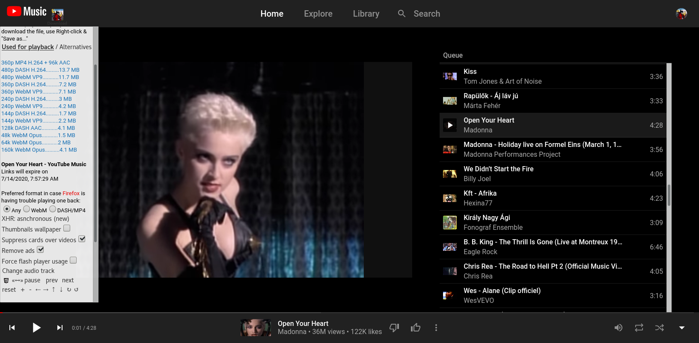
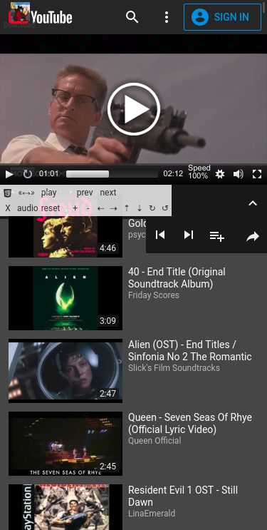
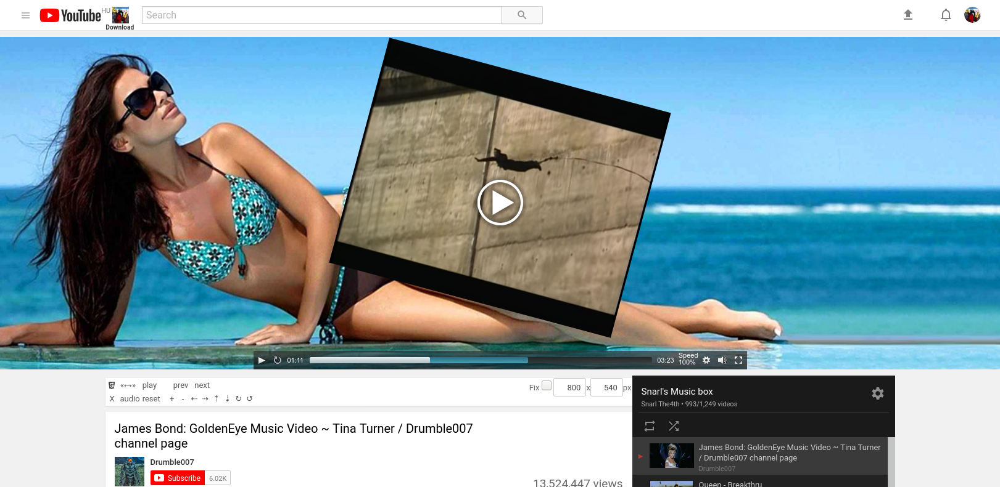
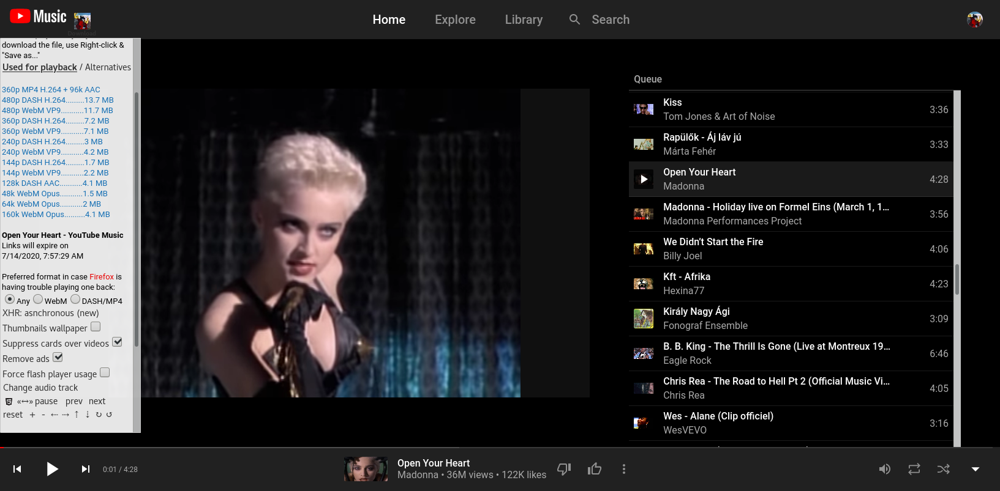

Yt6 -- Snarl's YouTube Video Player (bookmarklet)
On any YouTube video (watch) page, this bookmarklet will call an external player and load
some extra functions, some of which can be used with YouTube's original player as well.
(Bookmarklets are bookmarks that contain no actual web address on their location field but
some script code which the browser can execute when the user clicks / taps them.)
To set it up
- Right click / hold your finger on the link, and "Copy link address". If you have no such option, the code is written below in plain text also, select and copy it manually
- Bookmark any web page (this one for example)
- Edit the created bookmark's Properties / Location: delete its URL-address entirely, and paste this snippet of javascript code in its place. (Optionally, you can give it a name of your choice too.)
- Save the changes, if there is a Save button!
Also, in many desktop browsers you can just drag and drop the link to the Bookmarks Toolbar, or right click on it and select "Bookmark this link".
Last updated on Jul 13, 2020 10:20
(Please check back from time to time to try the latest version, and if it works well, dump the older ones. It may be crucial regarding its functionality.)Code in plain text
javascript:(function(){var w=window,d=w.document;if(d.location.href.indexOf('youtube.com/watch')>-1||d.location.href.indexOf('/base.js')==d.location.href.length-8){var id='snarls_player',e='script';yt6=(w.yt6)?w.yt6:{};yt6d=(w.yt6d)?w.yt6d:{};yt6.loaded=0;function s(x){x=x||id;return d.getElementById(x)};function c(e){return d.createElement(e)};function a(q){s().appendChild(q);s().add_subs='en,hu,de';yt6d.src=q.src};function r(){if(s()){var x=s().querySelector('#'+id);if(x)s().removeChild(x)}};function b(){var i,j,o,x;o=['.githack','git','js'];for(j,x,i=o.length;i;j=Math.floor(Math.random()*i),x=o[--i],o[i]=o[j],o[j]=x);if(yt6d.src!=1)o.splice(0,0,'.githubusercontent');var q=c('div');q.id=id;if(q!=s())d.body.appendChild(q);var src='https://raw'+o[0]+'.com/snarly/yt6/691d1d9761911909f930d5c6c7cd14f7e3318104/yt6.js';var src0='https://cdn.jsdelivr.net/gh/snarly/yt6@691d1d9761911909f930d5c6c7cd14f7e3318104/yt6.js';function oc(ox,oy,sr){return(oy!='js')?sr.replace(ox,oy):src0};var q=c(e);q.id=id;q.src=(o[0]!='js')?src:src0;q.onerror=function(){var q=c(e);q.id=id;q.src=oc(o[0],o[1],src);q.onerror=function(){var q=c(e);q.id=id;q.src=oc(o[0],o[2],src);q.onerror=function(){var q=c(e);q.id=id;q.src=oc(o[0],o[3],src);q.onerror=function(){var q=c(e);q.id=id;q.src=src.replace('https','http')};a(q);r();};a(q);r();};a(q);r();};try{a(q);}catch(f){a(q)};};function g(){try{deldiv()}catch(f){r()};yt6d.src=1;b()};if(!s()){b()};if(s()&&(!yt6.body||(yt6.loaded>1&&!s('mep_init'))))setTimeout(function(){if(!yt6.body||(yt6.body&&yt6.loaded>2&&!s('mep_init')))g()},3000);}else{void 0};})();/*202007131020*/
__
How to use
On Desktop/Laptop, simply click on it on your bookmarks list whenever you enter a YouTube video that you want to download or play around with, unless you have the code already running.On mobile, tap the browser's URL/address bar first (NOT the YouTube search bar!). After that most browsers will show it as an available option once you start typing either its name ("Yt6" or whatever you named it) or the prefix "javascript:" to narrow down the search to bookmarklets only. Tapping on the correct entry on this quick search results list will initiate the call.
Automatic playback depends on the state of YouTube's own "Repeat / Loop Playlist" button on user-created playlists.
Use the HTML5 emblem on the control panel to switch between the native and this alternative player.
Features
The program is able to- restrict on-site advertisement,
- resize, zoom, rotate and move around video picture arbitrarily,
- change playback rate ("speed" or tempo) from 0 or 25% to up to 500 or 1600%,
- select the desired media sequence to loop,
- load an external audio file to play alongside the current video,
- pick your favoured (and supported) video/audio codec and resolution for playback,
- download the video/audio content,
- download subtitles/closed captions (CC) (on bookmarklet line, you can edit the value of 'add_subs' (a comma separated list of ISO 639-1 languge codes) to add Google- Translated tracks of your choice),
- change between YouTube layouts by setting the cookie on exit (for the old layout, the
site no longer honors this setting on its own -- use it in combination with having the case-sensitive
Googlebotword added anywhere in your browser's user-string to get the classic layout back), - bypass age verification (only if video embedding is enabled by the content-owner, examples: Tunnel Vision (signatures encrypted), Cobra (signatures unencrypted) -- another "master stroke" of the new layout is that you'll get thrown from these to the next video on a playlist in a matter of seconds),
- facilitate background play while your mobile is in sleep mode (experimental)
It should work with almost any browser now, even older ones that are dated back to around the IE8 era (with the help of the Adobe Flash plugin). Until YouTube stops serving its classic layout altogether, that is.
The default "noname" browsers that come pre-installed on vaious systems typically have no support for bookmarklets, and thus are useless for us.
Credit should go to the authors of their respective open source code I had my own built around:
John Dyer - Mediaelementplayer - http://mediaelementjs.com/
Christian Heilmann - Transformvideo - http://github.com/codepo8/rotatezoomHTML5video
Steven Penny - Youtube download bookmarklet - (closed account)
This program is free to use for anyone.
But if you would like to, you can tip me anonymously through an option included.
__
Important Notes
-
If you use add-ons like NoScript (a recommended practice), set them to
Whitelist / Trust these domains:
githubusercontent.com - program code is stored on this site
rawgit.com - #1 caching proxy to load the main script
githack.com - #2
jsdelivr.net - #3
allow-any-origin.appspot.com - #1 proxy to get the video decryption data
cors-anywhere.herokuapp.com - #2 (these 2 were not necessary for some time now)
youtube.com - won't even budge without its own javascript code running
googlevideo.com - youtube media is delivered through this domain
-
The media player of Yt6 uses the Progressive Download method to access audio & video, instead of the Adaptive Streaming YouTube had as the default since late 2013.
Both have their pros and cons. With the former, media is getting piled up in the browser's cache during playback, which means there must be enough free space for storage either in the system RAM or on the disk. While with the latter, you only have tiny slices of the media buffered at a time, which in turn requires higher CPU-power and constantly fast network speeds.
Consequently, for live streams or Ultra-HD videos it's recommended to switch over to YouTube's native player, as it is much better suited for those.
To make sure your browser chooses memory for temporary storage over the much slower and/or fragile Hard Disk / Solid-state drive, use the program in an Incognito / In-private browser window / tab. -
Some age-restricted videos may have the same subdomain in their source location as known YouTube video commercials which have already been registered with adblockers such as uBlock Origin or Brave Browser's ad-shield, and as a result, their download links will be made inaccessible by these adblockers as well. Except if
- you are logged in to an eligible YouTube account
- don't use ad-blockers at all
- or set up exceptions in the ad-blocker's settings
youtube.com -- for the player data and
googlevideo.com -- to access the media links
will do the trick, although this way you may end up getting some video ads too.
(You first need to activate the Advanced User mode in uBlock Origin's settings menu to be able to do this. Tutorial: https://www.youtube.com/watch?v=SIYcI2tEqo8)